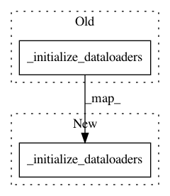

24bf6ad607b491fc28c83b930e7cec927599d73f,python/ray/util/sgd/torch/torch_runner.py,TorchRunner,setup,#TorchRunner#,139
Before Change
self._create_schedulers_if_available()
self._try_setup_apex()
self._create_loss()
self._initialize_dataloaders()
self.training_operator = self.training_operator_cls(
self.config,
models=self.models,
optimizers=self.optimizers,
After Change
def setup(self):
Initializes the model.
_remind_gpu_usage(self.use_gpu, is_chief=True)
self._initialize_dataloaders()
logger.debug("Creating model")
self.models = self.model_creator(self.config)
if not isinstance(self.models, collections.Iterable):
self.models = [self.models]
In pattern: SUPERPATTERN
Frequency: 3
Non-data size: 2
Instances
Project Name: ray-project/ray
Commit Name: 24bf6ad607b491fc28c83b930e7cec927599d73f
Time: 2020-04-01
Author: rliaw@berkeley.edu
File Name: python/ray/util/sgd/torch/torch_runner.py
Class Name: TorchRunner
Method Name: setup
Project Name: ray-project/ray
Commit Name: 24bf6ad607b491fc28c83b930e7cec927599d73f
Time: 2020-04-01
Author: rliaw@berkeley.edu
File Name: python/ray/util/sgd/torch/distributed_torch_runner.py
Class Name: DistributedTorchRunner
Method Name: _setup_training
Project Name: ray-project/ray
Commit Name: dcf58a43dca0ef7ef95775accd644831d4adca6c
Time: 2020-06-01
Author: itswu.alex@gmail.com
File Name: python/ray/util/sgd/torch/torch_runner.py
Class Name: TorchRunner
Method Name: setup_components